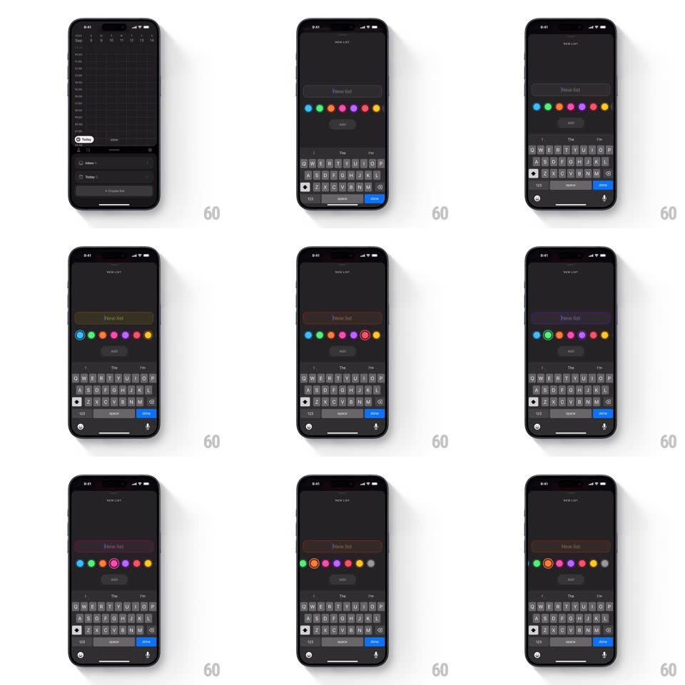

Media
Frame-by-frame

Rebuild this interaction 1:1: Amie's new-list color picker - under the "NEW LIST" field sits a row of color dots; tapping one springs a ring around it and live-recolors the name field's border, text caret, and the typed text itself.

Rebuild this interaction 1:1: Amie's new-list color picker - under the "NEW LIST" field sits a row of color dots; tapping one springs a ring around it and live-recolors the name field's border, text caret, and the typed text itself.
## Integration
Integration: stack-agnostic spec - springs given as stiffness/damping, timed motions as duration + curve; map every value to your framework and animation library of choice.
## Scene
Dark "NEW LIST" screen: a rounded name field ("New list" placeholder), a horizontal row of ~10 saturated color dots (blue, green, orange, red, pink, purple, yellow...), a dim "Add" button, and the system keyboard with a blue "done".
## Motion spec
Pattern: dot-row color commit with live field tinting.
- Tap a dot: a ring springs around it (scale 1.4 -> 1, spring ~420/16, white stroke) while the dot itself dips then rebounds (scale 0.85 -> 1.05 -> 1).
- The moment of selection, the name field re-tints: border, placeholder, caret, and any typed text crossfade to the chosen hue (200ms) - the whole field becomes a preview of the list's color.
- Switching dots slides the ring across (spring ~380/20) rather than vanish-and-reappear - the ring travels.
- The "Add" button stays quiet until a name exists, then ignites (opacity 0.4 -> 1, 200ms).
- The keyboard's "done" commits: the field's color flash-pulses once (brightness +20%, 250ms) as the sheet slides down.
## Calibration
- Dots are 20px with 12px gaps - fat-finger safe in a single row.
- Field text in the list color only after selection; before that it's neutral gray.
## Reduced motion
Ring appears; color swaps without spring.
## Don't miss
- The field is the preview - coloring chrome AND text makes the choice feel consequential before saving.
- The traveling ring preserves object constancy: one selection indicator, many colors.